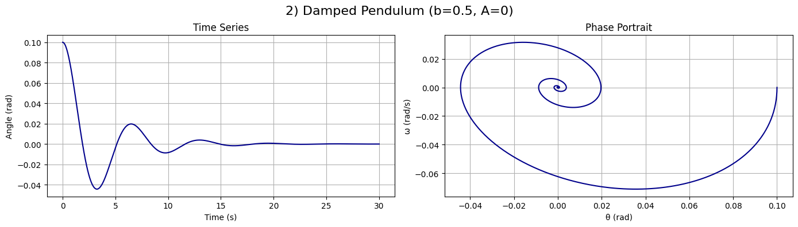
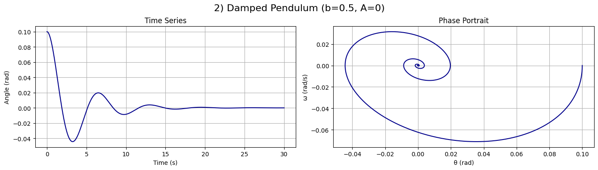
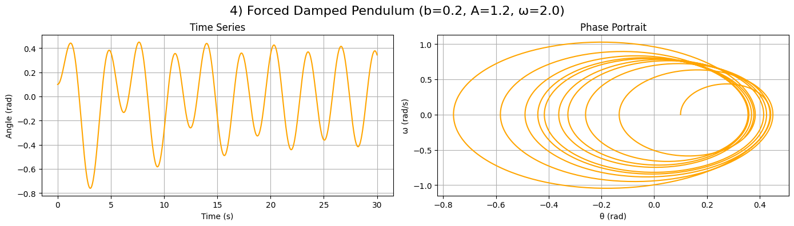
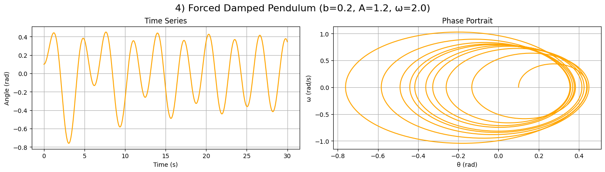

Problem 2
üìå Investigating the Dynamics of a Forced Damped Pendulum
üèó Motivation
The forced damped pendulum is a fascinating system that exhibits a range of behaviors, from simple oscillations to chaotic motion. By introducing damping and an external periodic force, we observe a transition from regular periodic motion to resonance, quasiperiodicity, and chaos.
This system is crucial for understanding:
- Resonance in mechanical systems (e.g., bridges, buildings under periodic stress).
- Nonlinear dynamics and chaos theory (e.g., weather patterns, heart rhythms).
- Energy harvesting from oscillations.
⚖ 1. Theoretical Foundation
üìú Equation of Motion
The forced damped pendulum follows the nonlinear differential equation:
where:
- \( \theta \) = angular displacement
- \( \gamma \) = damping coefficient
- \( \omega_0 \) = natural frequency of the pendulum (\( \omega_0 = \sqrt{\frac{g}{L}} \))
- \( A \) = amplitude of the external driving force
- \( \omega \) = driving frequency
For small angles (\( \theta \approx \sin\theta \)), the equation simplifies to:
which resembles the equation of a driven damped harmonic oscillator.
üìå Resonance Condition
Resonance occurs when the driving frequency \( \omega \) matches the natural frequency \( \omega_0 \), leading to maximum energy absorption and large oscillations:
At resonance, even small driving forces can produce large oscillations, which is crucial in mechanical engineering and structural safety.
üìä 2. Analysis of Dynamics
üîπ Effect of Damping (\( \gamma \))
- Low damping: The pendulum exhibits large oscillations and resonance.
- High damping: The system stabilizes quickly with reduced oscillations.
üîπ Effect of Driving Amplitude (\( A \))
- Low amplitude: The pendulum undergoes periodic motion.
- High amplitude: The system transitions into chaotic motion for certain frequencies.
üîπ Effect of Driving Frequency (\( \omega \))
- When \( \omega \approx \omega_0 \), resonance occurs.
- When \( \omega \) is far from \( \omega_0 \), the response is weak.
- Nonlinear behavior emerges at certain parameter values, leading to chaos.
üåç 3. Practical Applications
- Engineering & Structural Dynamics
- Bridges & Skyscrapers: Understanding how periodic forces (e.g., wind, earthquakes) affect large structures.
-
Vibration Isolation: Designing materials that minimize resonance effects.
-
Energy Harvesting
- Pendulum-based generators: Extracting energy from periodic motion.
-
Ocean wave energy devices.
-
Chaos Theory & Climate Models
- Weather prediction models involve nonlinear oscillatory behaviors similar to the forced pendulum.
üíª 4. Implementation (Python Simulation)
üåÄ Forced Damped Pendulum ‚Äì Graph Explanations
This document explains the results of simulating different types of pendulum motion using Python. Each case includes plots of: - Angle vs. Time - Phase Diagram (Angle vs. Angular Velocity)
üîπ 1) Simple Pendulum
Parameters:
- Damping: b = 0
- External Force: A = 0
Explanation:
- This is an ideal pendulum with no friction and no external driving force.
- The angle oscillates sinusoidally — classic harmonic motion.
- The phase portrait shows a closed elliptical trajectory, indicating periodic motion with constant energy.
- This case illustrates the basics of classical mechanics.
üîπ 2) Damped Pendulum
Parameters:
- Damping: b > 0
- External Force: A = 0
Explanation:
- The pendulum loses energy over time due to friction.
- The amplitude of oscillation gradually decreases until the system comes to rest.
- The phase portrait shows a spiral converging to the center, representing damped oscillations.
- Eventually, the pendulum reaches equilibrium.
üîπ 3) Forced Pendulum
Parameters:
- Damping: b = 0
- External Force: A ≠ 0, ω ≠ 0
Explanation:
- The pendulum is driven by an external periodic force.
- The motion becomes non-periodic and more complex, with varying amplitude.
- The phase portrait displays non-closed loops, indicating the pendulum is constantly gaining energy from the driving force.
- Demonstrates unstable behavior under continuous forcing.
üîπ 4) Forced Damped Pendulum
Parameters:
- Damping: b > 0
- External Force: A ≠ 0
Explanation:
- A combination of friction and periodic forcing leads to stable oscillations with limited amplitude.
- The amplitude grows initially, then settles into a steady state.
- The phase portrait shows a stable closed loop, indicating synchronization with the external force.
- Very important for understanding resonant systems in engineering.
üîπ 5) Chaotic / Resonant Pendulum
Parameters:
- Damping: b > 0
- Driving Force: A is large, ω is near resonance
Explanation:
- This system exhibits chaotic or resonant behavior.
- The angle varies unpredictably, with no fixed frequency or amplitude.
- The phase portrait shows a complicated, tangled structure, characteristic of chaotic systems.
- Demonstrates how deterministic systems can behave unpredictably.
ü߆ Summary
These five cases demonstrate the full spectrum of pendulum dynamics — from regular harmonic motion to complex chaotic behavior.
They highlight key physical phenomena:
- ✅ Harmonic motion
- ✅ Damping and energy loss
- ✅ Forced synchronization
- ✅ Chaos and unpredictability
 

 


import numpy as np
import matplotlib.pyplot as plt
from scipy.integrate import solve_ivp
# Уравнение маятника: d²θ/dt² + b*dθ/dt + sin(θ) = A*cos(ω*t)
def pendulum(t, y, b, A, omega):
theta, omega_ = y
dtheta_dt = omega_
domega_dt = -b * omega_ - np.sin(theta) + A * np.cos(omega * t)
return [dtheta_dt, domega_dt]
# Визуализация: графики θ(t) и (θ, ω)
def plot_pendulum(t, sol, title, color):
theta = sol[0]
omega = sol[1]
fig, ax = plt.subplots(1, 2, figsize=(14, 4))
fig.suptitle(title, fontsize=16)
ax[0].plot(t, theta, color=color)
ax[0].set_title("Time Series")
ax[0].set_xlabel("Time (s)")
ax[0].set_ylabel("Angle (rad)")
ax[0].grid(True)
ax[1].plot(theta, omega, color=color)
ax[1].set_title("Phase Portrait")
ax[1].set_xlabel("θ (rad)")
ax[1].set_ylabel("ω (rad/s)")
ax[1].grid(True)
plt.tight_layout()
plt.subplots_adjust(top=0.85) # чтобы заголовок не налезал
plt.show()
# Параметры моделирования
t_span = (0, 30)
t_eval = np.linspace(*t_span, 2000)
initial_state = [0.1, 0.0] # начальный угол и угловая скорость
# ===== 1. Simple Pendulum =====
sol1 = solve_ivp(pendulum, t_span, initial_state, t_eval=t_eval, args=(0.0, 0.0, 0.0))
plot_pendulum(sol1.t, sol1.y, "1) Simple Pendulum (b=0, A=0)", "crimson")
# ===== 2. Damped Pendulum =====
sol2 = solve_ivp(pendulum, t_span, initial_state, t_eval=t_eval, args=(0.5, 0.0, 0.0))
plot_pendulum(sol2.t, sol2.y, "2) Damped Pendulum (b=0.5, A=0)", "darkblue")
# ===== 3. Forced Pendulum =====
sol3 = solve_ivp(pendulum, t_span, initial_state, t_eval=t_eval, args=(0.0, 1.0, 2.0))
plot_pendulum(sol3.t, sol3.y, "3) Forced Pendulum (b=0, A=1.0, ω=2.0)", "teal")
# ===== 4. Forced Damped Pendulum =====
sol4 = solve_ivp(pendulum, t_span, initial_state, t_eval=t_eval, args=(0.2, 1.2, 2.0))
plot_pendulum(sol4.t, sol4.y, "4) Forced Damped Pendulum (b=0.2, A=1.2, ω=2.0)", "orange")
# ===== 5. Chaotic / Resonant Pendulum =====
sol5 = solve_ivp(pendulum, t_span, initial_state, t_eval=t_eval, args=(0.5, 1.5, 2/3))
plot_pendulum(sol5.t, sol5.y, "5) Chaotic / Resonant Pendulum (b=0.5, A=1.5, ω=2/3)", "firebrick")